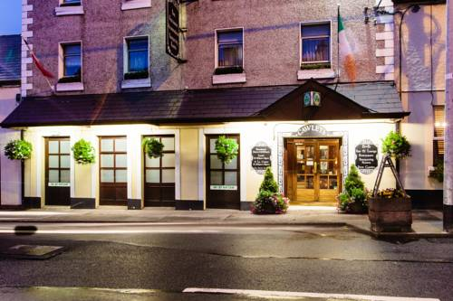

Cawley's Guesthouse has been a family-run establishment since 1964 and is located in Tubbercurry town centre. Free private parking is available and guests also benefit from a garden terrace and a landscaped walled garden. An en suite bathroom, TV and tea/coffee making facilities are provided in each room. Free WiFi is available throughout. This property also has one of the best-rated locations in Tubercurry! Guests are happier about it compared to other properties in the area.
Snorkeling is swimming through the water while wearing a diving mask, snorkel and fins. This gear allows you to see the amazing beauty that lies beneath the surface for long periods of time with a small amount of effort. It is a relaxing and interesting way to spend a few hours and you see something new every time. Snorkeling is done without all the complicated equipment and training that is required for scuba diving and allows us to enjoy the underwater life in their natural habitat.
Coney Island is the largest and the most famous of the three islands off the northern coast of the Coolera peninsula. It lies in Sligo Bay between Rosses Point and Ben Bulben in the north, and Strandhill and Knocknarea to the south. The island which is 1½ miles long by ¾ mile across is accessible by boat from the pier at Rosses Point. Laze on the beach, have a picnic or have a pint of Guinness in McGowans public house, the only pub on the island.
With a wide range of items on their menu and set menus, Cawleys really seems like the prefect place for dinner. On the tables the placemats double as the menu and the children’s menu has a colouring competition to keep the little monsters amused. The wine list is a good selection of reds & whites all priced at €19.95 a bottle or by the glass for €5.00, the selection includes wines from New Zealand, South Africa and Italy as well as a Chilean sparkling for that special day.